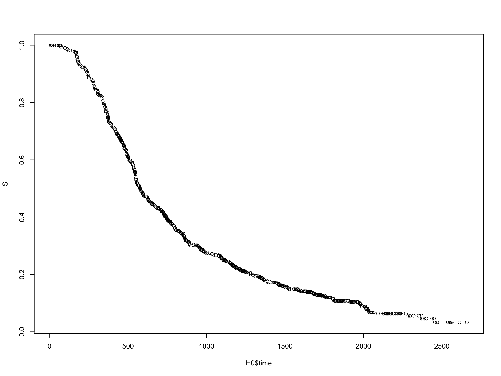
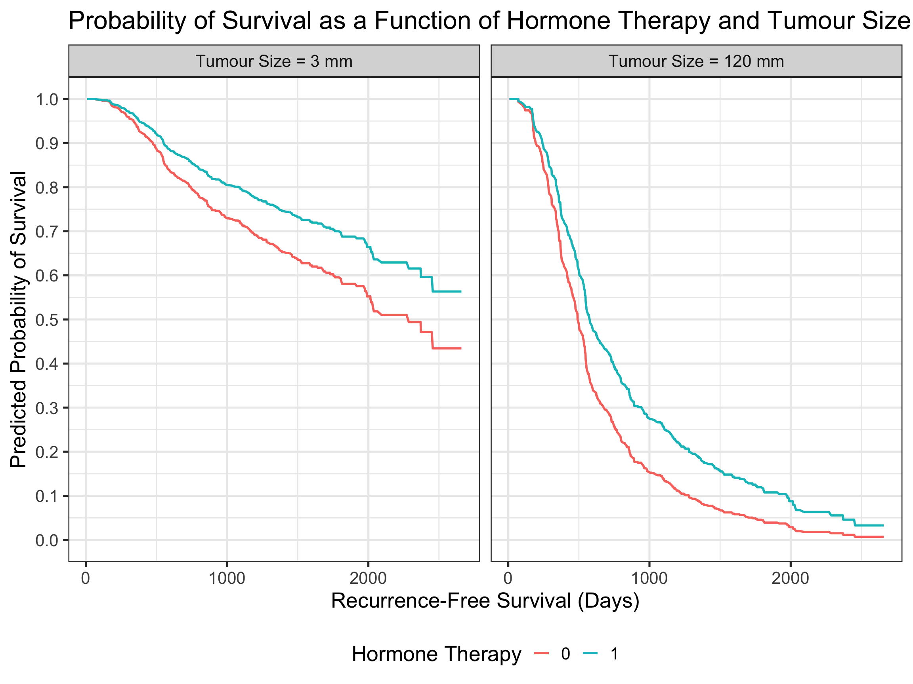

Code
| time | cens | horTh | tsize |
|---|---|---|---|
| 1814 | 1 | no | 21 |
| 2018 | 1 | yes | 12 |
| 712 | 1 | yes | 35 |
| 1807 | 1 | yes | 17 |
| 772 | 1 | no | 35 |
| 448 | 1 | no | 57 |
| 2172 | 0 | yes | 8 |
| 2161 | 0 | no | 16 |
| 471 | 1 | no | 39 |
| 2014 | 0 | no | 18 |
In the last post in this series on model prediction and visualisation in R we are going to talk about survival analysis and specifically the Cox model. Like the extensions to the standard linear model that we most recently discussed - the GLM and LMM - predicting with the Cox model is also relatively straightforward, but the intuition in how those predictions are calculated may be less so. I hope to make that easier for you today.
We’re going to use the inbuilt GBSG2 dataset form the TH.data package, so please install that package if you don’t already have it. The dataframe contains observations from the German Breast Cancer Study Group 2 study of 686 women, examining the effects of hormone treatment on recurrence-free survival time. The variables we’ll be using are:
time - recurrence free survival time (in days).cens - censoring indicator (0- censored, 1- event).horTh - hormonal therapy, a factor at two levels (yes and no).tsize - tumor size (in mm).The first few rows of the data look like:
| time | cens | horTh | tsize |
|---|---|---|---|
| 1814 | 1 | no | 21 |
| 2018 | 1 | yes | 12 |
| 712 | 1 | yes | 35 |
| 1807 | 1 | yes | 17 |
| 772 | 1 | no | 35 |
| 448 | 1 | no | 57 |
| 2172 | 0 | yes | 8 |
| 2161 | 0 | no | 16 |
| 471 | 1 | no | 39 |
| 2014 | 0 | no | 18 |
The first thing we can do is to plot the empirical survival curve by calling on the Kaplan-Meier estimator - stratifying this by whether a woman received hormone therapy or not.

It appears that unadjusted for other potentially confounding factors, women who take hormone therapy have a better chance of survival - an unsurprising finding I’m sure you would agree.
Let’s fit a Cox model to the data, now also adjusting for tumour size.
| Characteristic | HR1 | 95% CI1 | p-value |
|---|---|---|---|
| horTh | |||
| no | — | — | |
| yes | 0.69 | 0.54, 0.88 | 0.003 |
| tsize | 1.02 | 1.01, 1.02 | <0.001 |
| 1 HR = Hazard Ratio, CI = Confidence Interval | |||
The model results suggest (in agreement with the KM curve) that holding tumour size constant, there is an ~ 31% reduction in the risk of recurrence for women who take hormone therapy. Similarly, within strata of hormone therapy, each additional mm increase in tumour size is associated with an ~ 2% increase in the risk of recurrence over time.
Let’s say we are now interested in predicting survival as a function of both hormone therapy use and tumour size. Well we can just call predict() on our Cox model, specifying a new grid of data to predict on, which at minimum must include our time and status (which we set to 1) variables. In addition I have asked to predict survival for four covariate combinations (tumour sizes of 3 and 120 mm are the minimum and maximum values in the dataset):
no (0) and tumour size = 3 mmyes (1) and tumour size = 3 mmno (0) and tumour size = 120 mmyes (1) and tumour size = 120 mmNote that we need to make one small tweak in predict() which is to include an argument for prediction type - in this case we want “survival” (note there are additional types that you can specify depending on what you want to predict from the model).
The code to do this is shown below. The reason I’m calling this “auto mode” is that there’s really nothing different here to what we have done so far - we pretty much just let predict handle everything.
# Create new data grid to predict on
newdat <- expand.grid(time = seq(0, 2500, by = 50),
cens = 1,
horTh = levels(GBSG2$horTh),
tsize = c(min(GBSG2$tsize), max(GBSG2$tsize)))
# Calculate predicted survival probabilities
preds <- predict(cox_mod, newdata = newdat, type = "survival", se.fit = TRUE)
newdat$prob_surv <- preds$fit
# If wanting to calculate 95% C.I.'s...
newdat$lcl_surv <- preds$fit - 1.96*preds$se.fit
newdat$ucl_surv <- preds$fit + 1.96*preds$se.fit
# View predictions
head(newdat, 10) |>
kable(align = "c", digits = 4)| time | cens | horTh | tsize | prob_surv | lcl_surv | ucl_surv |
|---|---|---|---|---|---|---|
| 0 | 1 | no | 3 | 1.0000 | 1.0000 | 1.0000 |
| 50 | 1 | no | 3 | 1.0000 | 1.0000 | 1.0000 |
| 100 | 1 | no | 3 | 0.9978 | 0.9948 | 1.0009 |
| 150 | 1 | no | 3 | 0.9956 | 0.9913 | 1.0000 |
| 200 | 1 | no | 3 | 0.9823 | 0.9730 | 0.9917 |
| 250 | 1 | no | 3 | 0.9723 | 0.9600 | 0.9845 |
| 300 | 1 | no | 3 | 0.9599 | 0.9445 | 0.9753 |
| 350 | 1 | no | 3 | 0.9439 | 0.9248 | 0.9630 |
| 400 | 1 | no | 3 | 0.9231 | 0.8994 | 0.9468 |
| 450 | 1 | no | 3 | 0.9079 | 0.8810 | 0.9347 |
And then we can plot the predictions like so using ggplot:
# Create 'labeller' for tumour size
tum_names <- as_labeller(
c(`3` = "Tumour Size = 3 mm", `120` = "Tumour Size = 120 mm"))
# Plot
ggplot(newdat, aes(x = time, y = prob_surv, color = horTh)) +
geom_line(linewidth = 1) +
facet_wrap(tsize ~ ., labeller = tum_names) +
scale_y_continuous(limits = c(0, 1), breaks = seq(0, 1, by = 0.1)) +
labs(x = "Recurrence-Free Survival (Days)",
y = "Predicted Probability of Survival",
title = "Probability of Survival as a Function of Hormone Therapy and Tumour Size",
color = "Hormone Therapy") +
theme_bw(base_size = 20) + theme(legend.position = "bottom")
These visualisations confirm our intuition that survival is better for women with smaller tumours and who also take hormone therapy to manage their disease.
Ultimately, what I have described above is all you need to know if you want to visualise predictions from the Cox model. But if you are interested in understanding at a deeper level how the predicted values are calculated, I’ll also take you through “manual mode”.
An important first point to grasp is that estimation of the baseline hazard function is essential to predicting survival probabilities in time-to-event models. You can think of the baseline hazard function as the equivalent of the intercept in a standard linear model. These provide an absolute value of the outcome from which relative ‘effect’ estimates are computed. For example, the hazard ratio in a Cox model represents a proportional change in the hazard rate for one covariate category (e.g. hormone therapy = yes [coded as 1]) relative to a reference covariate category (e.g. hormone therapy = no [coded as 0]) which is assumed to take the shape of the baseline hazard rate function. The baseline hazard rate itself can vary over time, but the proportional change should remain the same (if the proportional hazards assumption is satisfied). I have briefly touched on these ideas in a previous post. The comparison with the linear model is in the regression coefficient representing a relative average change from the model intercept, which if you recall is the mean value of the outcome when all covariate values are at 0 or at their reference level. Similarly, the baseline hazard rate function is referred to as baseline because it represents the hazard rate function when all covariate values are at 0 or at their reference level.
Now, while fully-parametric survival models assume a particular statistical distribution for the baseline hazard rate and estimate it by default, the semi-parametric nature of the Cox model allows hazard ratios to be computed without any knowledge of the function. Consequently, we cannot directly obtain survival probabilities from it, but we can do a little post-hoc “under-the-hood” processing to combine it with a non-parametric estimator of the baseline hazard function (typically the Breslow estimator) - and estimate survival probabilities that way.
In R we can use the basehaz() function to calculate the cumulative baseline hazard function H(t). This is different to the baseline hazard rate function that we have discussed until now. The cumulative baseline hazard function represents the integral of the baseline hazard rate function from 0 to t, and can be thought of as the total accumulated risk of experiencing the event of interest by time t. Because it is more computationally stable to work with, H(t) acts as a useful link in deriving survival probabilities from hazard rates. Once we know the cumulative baseline hazard function, it’s very easy to find the commensurate survival function S(t) (the probability that the event of interest has not occurred by time t) by simply exponentiating the negative of H(t) - i.e.:
\[ S(t) = e^{-H(t)} \] More detail can be found here.
Let’s now put this process into action with the existing data. We can essentially break this down into five steps which I have labelled accordingly in the code below to help you follow the description:
The first thing we need to do is to estimate the cumulative baseline hazard function (H0) when all covariate values are at 0 or at their reference level. We do this using specifying centered = FALSE in the call to basehaz(). It is important to include the centered = F argument as the default setting is TRUE which we don’t want as this has a different interpretation (i.e. cumulative hazard function estimated at the mean of all covariate values). Also note that the cumulative hazard is estimated at each of the observed times in the dataset.
We then estimate the cumulative hazard function (H1 - H4) for each covariate combination of interest. For these data we have four as I have listed above. As an example, to calculate H1 we simply multiply H0 by the covariate combination values and their respective Cox model coefficients. e.g.:
H1 <- H0$hazard * exp((0 * cox_mod$coefficients[1]) + (3 * cox_mod$coefficients[2]))
In the above cox_mod$coefficients[1] gives the coefficient value for hormone therapy and cox_mod$coefficients[2] gives the coefficient value for tumour size. To obtain the cumulative hazard function for the first covariate combination we just multiply the cumulative baseline hazard function by the exponent of the sum of the products of the coefficients and our covariate values of interest (in this case 0 to indicate no hormone therapy and 3 to indicate the tumour size).
We then calculate the survival function for each covariate combination by taking the exponent of the negative of the cumulative hazard function.
Now we create a dataframe containing the predicted survival probabilities for each covariate combination. The first 20 rows for each covariate combination is shown below.
Then we create our plot.
# Step 1
# Estimate the cumulative baseline hazard function
H0 <- basehaz(cox_mod, centered = F)
# Step 2
# Calculate cumulative hazard function for covariate combo 1.
H1 <- H0$hazard * exp((0 * cox_mod$coefficients[1]) + (3 * cox_mod$coefficients[2]))
# Calculate cumulative hazard function for covariate combo 2.
H2 <- H0$hazard * exp((1 * cox_mod$coefficients[1]) + (3 * cox_mod$coefficients[2]))
# Calculate cumulative hazard function for covariate combo 3.
H3 <- H0$hazard * exp((0 * cox_mod$coefficients[1]) + (120 * cox_mod$coefficients[2]))
# Calculate cumulative hazard function for covariate combo 4.
H4 <- H0$hazard * exp((1 * cox_mod$coefficients[1]) + (120 * cox_mod$coefficients[2]))
# Step 3
# Calculate survival function for covariate combo 1.
S1 <- exp(-H1)
# Calculate survival function for covariate combo 2.
S2 <- exp(-H2)
# Calculate survival function for covariate combo 3.
S3 <- exp(-H3)
# Calculate survival function for covariate combo 4.
S4 <- exp(-H4)
# Step 4
# Create dataframe of predicted survival probabilities as a function of covariate combos
surv_df <- rbind(data.frame(combo = 1, time = H0$time, horTh = 0, tsize = 3, prob_surv = S1),
data.frame(combo = 2, time = H0$time, horTh = 1, tsize = 3, prob_surv = S2),
data.frame(combo = 3, time = H0$time, horTh = 0, tsize = 120, prob_surv = S3),
data.frame(combo = 4, time = H0$time, horTh = 1, tsize = 120, prob_surv = S4))
# Inspect each df
head(data.frame(combo = 1, time = H0$time, horTh = 0, tsize = 3, prob_surv = S1), 20) |>
kable(align = "c", digits = 4)| combo | time | horTh | tsize | prob_surv |
|---|---|---|---|---|
| 1 | 8 | 0 | 3 | 1.0000 |
| 1 | 15 | 0 | 3 | 1.0000 |
| 1 | 16 | 0 | 3 | 1.0000 |
| 1 | 17 | 0 | 3 | 1.0000 |
| 1 | 18 | 0 | 3 | 1.0000 |
| 1 | 29 | 0 | 3 | 1.0000 |
| 1 | 42 | 0 | 3 | 1.0000 |
| 1 | 46 | 0 | 3 | 1.0000 |
| 1 | 57 | 0 | 3 | 1.0000 |
| 1 | 63 | 0 | 3 | 1.0000 |
| 1 | 65 | 0 | 3 | 1.0000 |
| 1 | 67 | 0 | 3 | 1.0000 |
| 1 | 71 | 0 | 3 | 1.0000 |
| 1 | 72 | 0 | 3 | 0.9989 |
| 1 | 98 | 0 | 3 | 0.9978 |
| 1 | 113 | 0 | 3 | 0.9967 |
| 1 | 114 | 0 | 3 | 0.9967 |
| 1 | 120 | 0 | 3 | 0.9956 |
| 1 | 148 | 0 | 3 | 0.9956 |
| 1 | 160 | 0 | 3 | 0.9945 |
| combo | time | horTh | tsize | prob_surv |
|---|---|---|---|---|
| 2 | 8 | 1 | 3 | 1.0000 |
| 2 | 15 | 1 | 3 | 1.0000 |
| 2 | 16 | 1 | 3 | 1.0000 |
| 2 | 17 | 1 | 3 | 1.0000 |
| 2 | 18 | 1 | 3 | 1.0000 |
| 2 | 29 | 1 | 3 | 1.0000 |
| 2 | 42 | 1 | 3 | 1.0000 |
| 2 | 46 | 1 | 3 | 1.0000 |
| 2 | 57 | 1 | 3 | 1.0000 |
| 2 | 63 | 1 | 3 | 1.0000 |
| 2 | 65 | 1 | 3 | 1.0000 |
| 2 | 67 | 1 | 3 | 1.0000 |
| 2 | 71 | 1 | 3 | 1.0000 |
| 2 | 72 | 1 | 3 | 0.9992 |
| 2 | 98 | 1 | 3 | 0.9985 |
| 2 | 113 | 1 | 3 | 0.9977 |
| 2 | 114 | 1 | 3 | 0.9977 |
| 2 | 120 | 1 | 3 | 0.9970 |
| 2 | 148 | 1 | 3 | 0.9970 |
| 2 | 160 | 1 | 3 | 0.9962 |
| combo | time | horTh | tsize | prob_surv |
|---|---|---|---|---|
| 3 | 8 | 0 | 120 | 1.0000 |
| 3 | 15 | 0 | 120 | 1.0000 |
| 3 | 16 | 0 | 120 | 1.0000 |
| 3 | 17 | 0 | 120 | 1.0000 |
| 3 | 18 | 0 | 120 | 1.0000 |
| 3 | 29 | 0 | 120 | 1.0000 |
| 3 | 42 | 0 | 120 | 1.0000 |
| 3 | 46 | 0 | 120 | 1.0000 |
| 3 | 57 | 0 | 120 | 1.0000 |
| 3 | 63 | 0 | 120 | 1.0000 |
| 3 | 65 | 0 | 120 | 1.0000 |
| 3 | 67 | 0 | 120 | 1.0000 |
| 3 | 71 | 0 | 120 | 1.0000 |
| 3 | 72 | 0 | 120 | 0.9935 |
| 3 | 98 | 0 | 120 | 0.9871 |
| 3 | 113 | 0 | 120 | 0.9807 |
| 3 | 114 | 0 | 120 | 0.9807 |
| 3 | 120 | 0 | 120 | 0.9743 |
| 3 | 148 | 0 | 120 | 0.9743 |
| 3 | 160 | 0 | 120 | 0.9679 |
| combo | time | horTh | tsize | prob_surv |
|---|---|---|---|---|
| 4 | 8 | 1 | 120 | 1.0000 |
| 4 | 15 | 1 | 120 | 1.0000 |
| 4 | 16 | 1 | 120 | 1.0000 |
| 4 | 17 | 1 | 120 | 1.0000 |
| 4 | 18 | 1 | 120 | 1.0000 |
| 4 | 29 | 1 | 120 | 1.0000 |
| 4 | 42 | 1 | 120 | 1.0000 |
| 4 | 46 | 1 | 120 | 1.0000 |
| 4 | 57 | 1 | 120 | 1.0000 |
| 4 | 63 | 1 | 120 | 1.0000 |
| 4 | 65 | 1 | 120 | 1.0000 |
| 4 | 67 | 1 | 120 | 1.0000 |
| 4 | 71 | 1 | 120 | 1.0000 |
| 4 | 72 | 1 | 120 | 0.9955 |
| 4 | 98 | 1 | 120 | 0.9911 |
| 4 | 113 | 1 | 120 | 0.9867 |
| 4 | 114 | 1 | 120 | 0.9867 |
| 4 | 120 | 1 | 120 | 0.9822 |
| 4 | 148 | 1 | 120 | 0.9822 |
| 4 | 160 | 1 | 120 | 0.9778 |
…and Voilà.
# Step 5
# Create 'labeller' for tumour size
tum_names <- as_labeller(
c(`3` = "Tumour Size = 3 mm", `120` = "Tumour Size = 120 mm"))
# Plot
ggplot(surv_df, aes(x = time, y = prob_surv, color = factor(horTh))) +
geom_line(linewidth = 1) +
facet_wrap(tsize ~ ., labeller = tum_names) +
scale_y_continuous(limits = c(0, 1), breaks = seq(0, 1, by = 0.1)) +
labs(x = "Recurrence-Free Survival (Days)",
y = "Predicted Probability of Survival",
title = "Probability of Survival as a Function of Hormone Therapy and Tumour Size",
color = "Hormone Therapy") +
theme_bw(base_size = 20) + theme(legend.position = "bottom")
That brings us to an end in this series on model prediction and visualisation in R. I hope it’s given you some appreciation for how much further you can take your regression modelling endeavours. I find being able to ‘see’ what my model is proposing as a reflection of reality to be an invaluable addition to the simply listing of a bunch of coefficient values that we tend to take as the final product of model estimation. We don’t need to - and in fact we shouldn’t - stop there. You are familiar with the statistical adage of ‘always plot your data’. Well, in becoming a better data analyst I think a similar argument could be made for ‘always plot your models’.
Until next time…